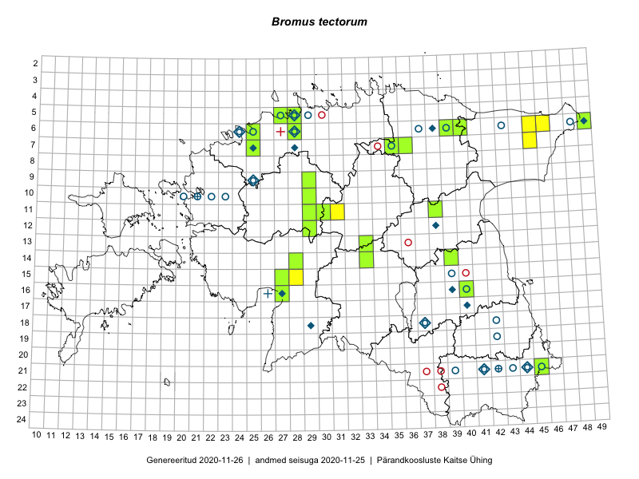

Bromus tectorum — müürluste
Kaardile koondatud taksonid: Bromus tectorum L. (58)

Kaart põhineb 58 kirjel, neist:
vaatlusi 15
eksemplare 43
Kaasaegsed1 leiukohad asuvad 29 ruudus.
Andmed “Eesti taimede levikuatlasest”,2 sulgudes ruutude arv:3
● 1971–2005 (13)
○ 1921–1970 (22)
△ kuni 1920 (1)
+ hävinud (0)
? kaheldav (0)
Lisaruudud teistest andmebaasidest:4
ELF: 2006– . . . (0)
PKÜ: 2006– . . . (0)
ELF: 1971–2005 (0)
PKÜ: 1997–2005 (0)
| Ruut | Vaatleja(d) | Vaatlusaeg | Kirje PlutoFis |
|---|---|---|---|
| 21-45 | Toomas Kukk, Timo Luhamäe, Kersti Tambets, Sten Mander, Janika Sammasto | 2014-07-30 | ruut/ala: Bromus tectorum L. |
| 05-27 | Erkki Otsman, Sergei Smirnov | 2015-07-08 | ruut/ala: Bromus tectorum L. |
| 07-25 | Erkki Otsman, Sergei Smirnov | 2015-07-17 | ruut/ala: Bromus tectorum L. |
| 21-45 | Toomas Kukk, Tiit Hallikma, Johannes Kõdar | 2016-06-14 | ruut/ala: Bromus tectorum L. |
| 12-29 | Meeli Mesipuu, Indrek Tammekänd | 2017-08-09 | ruut/ala: Bromus tectorum L. |
| 05-27 | Erkki Otsman, Sergei Smirnov | 2015-07-08 | punkt: Bromus tectorum L. |
| 11-31 | Toivo Sepp, Peedu Saar | 2016-07-22 | punkt: Bromus tectorum L. |
| 16-40 | Peedu Saar | 2017-05-24 | punkt: Bromus tectorum L. |
| 15-28 | Timo Luhamäe, Peedu Saar | 2017-08-11 | punkt: Bromus tectorum L. |
| 15-28 | Peedu Saar, Timo Luhamäe | 2017-08-11 | ruut/ala: Bromus tectorum L. |
| 07-35 | Peedu Saar | 2018-05-19 | ruut/ala: Bromus tectorum L. |
| 06-46 | Toomas Kukk, Thea Kull | 2019-09-11 | punkt: Bromus tectorum L. |
| 06-45 | Toomas Kukk, Thea Kull | 2019-09-11 | punkt: Bromus tectorum L. |
| 07-45 | Thea Kull, Toomas Kukk | 2019-09-12 | ruut/ala: Bromus tectorum L. |
| 06-45 | Thea Kull, Toomas Kukk | 2019-09-11 | punkt: Bromus tectorum L. |
| 06-40 | Peedu Saar, S. Laherand | 2015-06-01 | TAA0116373: Bromus tectorum L. |
| 11-38 | Peedu Saar, Eerik Leibak | 2015-08-18 | TAA0116375: Bromus tectorum L. |
| 07-25 | Peedu Saar | 2013-06 | TAA0116778: Bromus tectorum L. |
| 11-29 | Toomas Kukk, Tiit Hallikma | 2015-06-11 | TAA0134894: Bromus tectorum L. |
| 06-40 | Peedu Saar, Sander Laherand | 2016-07-28 | TAA0134704: Bromus tectorum L. |
| 05-28 | Peedu Saar | 2016-06-01 | TAA0134707: Bromus tectorum L. |
| 16-27 | Toomas Kukk, Meeli Mesipuu | 2016-10-05 | TAA0136218: Bromus tectorum L. |
| 21-45 | Toomas Kukk | 2013-06-23 | TAA0112255: Bromus tectorum L. |
| 21-45 | Toomas Kukk, Tiit Hallikma, Johannes Kõdar | 2016-06-14 | TAA0138103: Bromus tectorum L. |
| 21-45 | Toomas Kukk, Tiit Hallikma, Johannes Kõdar | 2016-06-14 | TAA0138104: Bromus tectorum L. |
| 06-28 | Toomas Kukk | 2016-07-04 | TAA0139572: Bromus tectorum L. |
| 06-28 | Toomas Kukk | 2016-07-04 | TAA0139573: Bromus tectorum L. |
| 06-25 | Toomas Kukk, Sander Laherand | 2016-07-05 | TAA0139578: Bromus tectorum L. |
| 06-25 | Toomas Kukk, Sander Laherand | 2016-07-05 | TAA0139579: Bromus tectorum L. |
| 16-27 | Indrek Tammekänd | 2016-06-22 | TAA0139869: Bromus tectorum L. |
| 14-33 | Indrek Tammekänd, Ott Luuk | 2016-07-21 | TAA0139990: Bromus tectorum L. |
| 09-29 | Toivo Sepp | 2015-05-28 | TAA0140282: Bromus tectorum L. |
| 07-25 | Erkki Otsman, Sergei Smirnov | 2015-07-17 | TAA0140322: Bromus tectorum L. |
| 05-27 | Erkki Otsman, Sergei Smirnov | 2015-07-08 | TAA0140329: Bromus tectorum L. |
| 06-25 | Jaak-Albert Metsoja | 2015-07-26 | TAA0140511: Bromus tectorum L. |
| 13-33 | Toomas Kukk, Ilmar Uibopuu | 2017-08-07 | TAA0141671: Bromus tectorum L. |
| 07-35 | Toomas Kukk | 2017-08-03 | TAA0141713: Bromus tectorum L. |
| 06-49 | Toomas Kukk | 2017-07-21 | TAA0142070: Bromus tectorum L. |
| 15-27 | Indrek Tammekänd | 2017-05-31 | TAA0143822: Bromus tectorum L. |
| 14-28 | Indrek Tammekänd | 2017-07-16 | TAA0143353: Bromus tectorum L. |
| 12-29 | Indrek Tammekänd, Meeli Mesipuu | 2017-08-09 | TAA0143439: Bromus tectorum L. |
| 14-28 | Indrek Tammekänd, Ott Luuk | 2017-08-11 | TAA0143502: Bromus tectorum L. |
| 05-27 | Toomas Kukk | 2017-06-22 | TAA0142214: Bromus tectorum L. |
| 05-27 | Toomas Kukk | 2017-06-22 | TAA0142215: Bromus tectorum L. |
| 11-30 | Ott Luuk, Toivo Sepp | 2019-07-23 | TAA0147542: Bromus tectorum L. |
| 11-30 | Ott Luuk, Toivo Sepp | 2019-07-23 | TAA0147543: Bromus tectorum L. |
| 06-39 | Ott Luuk, Peedu Saar | 2019-07-05 | TAA0150112: Bromus tectorum L. |
| 06-39 | Ott Luuk, Peedu Saar | 2019-07-05 | TAA0150113: Bromus tectorum L. |
| 07-36 | Ott Luuk, Jaak-Albert Metsoja | 2019-08-05 | TAA0150146: Bromus tectorum L. |
| 14-39 | Thea Kull | 2019-06-17 | TAA0148016: Bromus tectorum L. |
| 16-40 | Ott Luuk | 2018-06-04 | TAA0147385: Bromus tectorum L. |
| 16-40 | Ott Luuk | 2018-06-04 | TAA0147386: Bromus tectorum L. |
| 16-40 | Ott Luuk | 2018-06-04 | TAA0147387: Bromus tectorum L. |
| 16-40 | Ott Luuk | 2018-06-04 | TAA0147388: Bromus tectorum L. |
| 06-28 | Toomas Kukk | 2019-07-29 | TAA0148801: Bromus tectorum L. |
| 06-28 | Toomas Kukk | 2019-07-29 | TAA0148802: Bromus tectorum L. |
| 10-29 | Indrek Tammekänd | 2019-06-07 | TAA0152014: Bromus tectorum L. |
| 15-27 | Indrek Tammekänd | 2019-05-26 | TAA0152055: Bromus tectorum L. |
Kaasaegsed leiukohad (tähistatud värvitud ruutudega) põhinevad peamiselt 2014–2019 välitööandmetel. Väiksemal määral on andmebaasi kantud vanemaid leiuandmeid aastatest 2006–2013.↩︎
Kukk, T., Kull, T., Eesti taimede levikuatlas. Eesti Maaülikool, Põllumajandus- ja Keskkonnainstituut, Tartu, 2005.↩︎
NB! 2005. aasta atlase andmestikus katavad uuemad leiud vanemaid. Näiteks kui liik on ruudus registreeritud 1971–2005, siis pole võimalik öelda, kas ta oli sellest ruudust teada ka enne 1970. aastat. Vana atlase andmetel hävinud ja kaheldavaid leiukohti pole hilisemate (taas)leidude põhjal korrigeeritud.↩︎
Eestimaa Looduse Fondi (ELF) ja Pärandkoosluste Kaitse Ühingu (PKÜ) andmebaasid sisaldavad inventeeritud koosluste kirjeldusi ja liigiloendeid. Neist andmekogudest on kaardile lisatud lisatud vaid need ruudud, millest uue atlase andmekogus taksoni kohta kirjeid veel pole. Kõrvale on jäetud teadaolevalt kaheldavad määrangud. Kaartidel katavad uuema perioodi andmed vanemaid, PKÜ omad ELFi omi. Kattumise tõttu võib kaardil näha olla vähem mingi kategooria ruute kui legendis olev arv näitab. ELFi ja PKÜ andmed ei kajastu hetkel vaatluste tabelis ega ruutude liigiloendites.↩︎